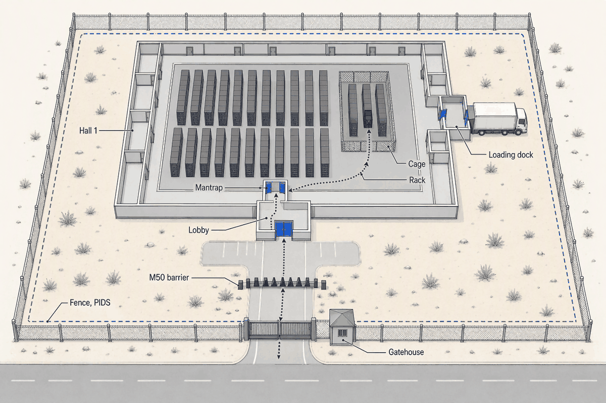
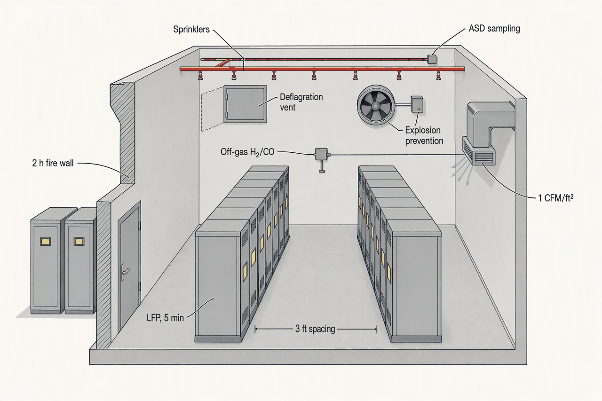

Physical Security, Fire Protection, Monitoring and Efficiency
Deep detail and sources: the appendix for this topic. Short version: sixty words.
Topics 4 to 9 built a hall that can be powered, cooled and connected; this chapter adds the four systems by which it sees and protects itself. Each has its own standard and trade, and each is only trustworthy if its measurement points sit where the definitions say. Topic 10 delivers the security, fire and monitoring systems as installed; Topic 11 proves them, operates them and retires them.
- ~5 people/minThroughput of a mantrap portal at the hall doorSlow on purpose; few people need the white space
- ≥ 90 daysThe retained record, video or access logs (PCI DSS Req 9)"90 days of video" is a myth; logs qualify
- ≤ 1.5 m/sCooling air velocity on VEWFD pre-alarm (FM DS 5-32)Detection needs the air to slow down
- 2,500–4,500Monitored points in one 10 MW hallWhy the points list is the most fought-over document
- 1.56Industry-average PUE (Uptime 2024), against 1.4 designed and ~1.6 for Phase 1Part load, not bad design
- 3–6%Share of ex-IT capex for security, fire and monitoring togetherSmall money, outsized audit and schedule risk
Security: seven boundaries between the road and the rack
- Gate: intercom, guard checks the pre-authorised list
- visitor logged at the gate
- Parking inside the fence, M50 barrier behind
- vehicle inside the perimeter
- Lobby: photo ID, visitor-distinct badge, escort assigned
- badge issued, escort named
- Corridor door: card plus PIN
- door event, with the escort's card
- Mantrap into Hall 1: card plus biometric, one body, anti-passback
- hall entry, one person per cycle
- Cage door: tenant's or operator's credential
- cage entry
- Rack: electronic handle logs the open
Every arrow is a record an auditor will ask for, and the mantrap is slow on purpose. The escort, not the door, is the control SOC 2 tests: the auditor reads the visitor log against the badge log and asks who was with them (APX-security-monitoring §2).
| Layer | What it stops | Control | Standard | Wholesale | Retail |
|---|---|---|---|---|---|
| Perimeter | Vehicle | M50/P1 barriers, setback | ASTM F2656 | Operator | Operator |
| Site | Approach on foot | Fence, PIDS, CCTV, guard | EN 50600-2-5 Class 1–2 | Operator | Operator |
| Envelope | Walk-in | One lobby, dock vestibule | TIA-942, NIST PE-3 | Operator | Operator |
| Hall | Tailgating | Mantrap, 2FA, anti-passback | EN 50600 Class 3, PCI Req 9 | Operator | Operator |
| Cage or suite | Other tenants | Mesh or hard wall | ISO 27001 A.7 | Tenant | Operator |
| Rack | Insider | Electronic handle | NIST PE-6 logging | Tenant | Operator |
No single failure grants a rack. The frameworks do not replace the rings, they audit them, and in a wholesale hall the last two rings belong to the tenant, which is why audit rights are written into the lease (APX-security-monitoring §1, APX-security-monitoring §3).
Ratings, biometrics and the guard arithmetic
- The old State Department K4/K8/K12 barrier ratings are superseded by ASTM F2656 M30/M40/M50 (a 15,000 lb truck stopped at 30/40/50 mph) with a P1–P3 penetration suffix. Many projects over-buy K12 when M30/P1 covers the assessed threat at half the cost; the foundation matters as much as the barrier.
- Biometrics in use: fingerprint, hand geometry, iris and increasingly face. The mantrap confirms a single occupant with weight sensors, time-of-flight or stereo vision.
- One 24×7 guard post is about 4.5 FTE and $130–440k a year (vendor-sourced, midpoint ~$166k). The reference campus keeps two posts, gatehouse and lobby/SOC, ~$0.35–0.45M a year indicative, plus a remote SOC at $10–30k a year, which detects and notifies but cannot intervene.
- Access control: $1,500–4,000 per standard door, $3,000–10,000 per biometric opening (vendor pricing, verify); a mantrap portal is a five-figure item before integration.

The plan decides how many boundaries a visitor crosses; the hardware only enforces the lines. The dock is the one boundary that must open to receive gear, so it becomes its own alarmed, camera-covered vestibule rather than a door into the corridor.
Fire: one building, six designs
| Option | Mechanism | Proof test | Risk to hardware | 2026 status | Where used |
|---|---|---|---|---|---|
| Pre-action sprinkler | Water held out until a detector and a head both operate | Hydrostatic and trip test | Water only under opened heads | Code baseline; FM prefers control over water-avoidance | White space |
| HFC-227ea | Halocarbon absorbs heat | Door-fan, 85% for 10 min | Clean | AIM Act phase-down to 2036; ~300% price spike | Legacy rooms |
| FK-5-1-12 | Fluoroketone absorbs heat | Door-fan | Clean | 3M exit end-2025; generics carry PFAS risk | Declining |
| Inert gas IG-541/55/100 | Oxygen held below combustion | Door-fan | Clean; discharge noise risks HDDs | Durable | Electrical rooms |
| Water mist | Fine droplets, 70–90% less water | Pump and nozzle test | Little water | FM-approved for all DC areas incl. Li-ion since Jan 2023 | AI halls, battery areas |
| Oxygen reduction | ~15% O₂ held permanently | Sealing test, FM DS 4-13 | None | Niche | Rarely occupied rooms |
The clean agents are leaving; the durable choices are water in some form and inert gas. Pick by room, not by brochure, and every gas needs a door-fan test the schedule must hold (APX-security-monitoring §5).
Cost, refill and the door-fan test
- Pre-action: lowest capex, no refill. Halocarbon and FK: high agent cost, a bottled recharge after discharge, and a DOT 5-year cylinder retest. Inert gas: a large high-pressure cylinder farm and footprint, no phase-down exposure. Mist: moderate cost, water and pump service. Oxygen reduction: high running cost for nitrogen generation and room sealing.
- NFPA 2001 requires 85% of the design concentration held at the highest combustible level for at least 10 minutes; walls run slab to deck or the agent leaks over the ceiling.
| Room | Detection | Suppression | Code driver | Why |
|---|---|---|---|---|
| Air-cooled white space | ASD Class A, hot aisle and above ceiling, plus spot | Double-interlock pre-action; pre-alarm slows air to ≤ 1.5 m/s | NFPA 75/72, FM DS 5-32 | Gear survives an opened head; gas would reopen the EPO question |
| AI pods | ASD plus conductive leak cable, coolant shut-off < 60 s | Pre-action overhead; welded stainless loops, glycol minimised | NFPA 75-2024 §8.2.2, FM DS 5-32 | A leak is the likelier event; the code is unsettled |
| UPS and LFP battery rooms | Off-gas H₂/CO plus ASD | Water; deflagration venting plus NFPA 69 prevention; ≥ 1 CFM/ft² | NFPA 855 (2026), UL 9540A | Runaway is not a fire an agent can stop |
| Electrical rooms, MEP gallery | Spot plus ASD | Inert gas IG-541/55, door-fan tested | NFPA 2001, FM DS 5-33 | Water on switchgear is the second disaster |
| Generator yard and fuel | Flame and heat | Foam or water; bunding | NFPA 30/37, IFC | Diesel is a pool fire |
| CDU room | Leak plus ASD | Pre-action plus leak isolation | FM DS 5-32 | Water is already in the room |
Water where gear survives a head opening, gas where switchgear cannot, and a battery room with three systems because runaway is not a fire (APX-security-monitoring §4, APX-security-monitoring §7).
Spot against aspirating, and the rooms not in the table
- Spot detectors respond late in a high-airflow room because the cooling air dilutes the smoke and carries it past them. Aspirating detection samples continuously through a pipe network and reacts at roughly 100× lower concentration; EN 54-20 Class A means before visible smoke. Placement follows the airflow: hot-aisle return, above ceiling, under floor, and in-cabinet for the highest-value racks.
- Nuisance causes are construction dust at turnover, humidity and diesel exhaust, so thresholds are set per room against the measured background.
- Dock: spot or heat detection, wet or pre-action sprinkler. Offices: spot detection, wet-pipe sprinkler under NFPA 13.
- ASD pre-alarm at Class A
- BMS slows cooling air to ≤ 1.5 m/s; the operator investigates
- Second detector or spot confirms
- alarm confirmed
- Fire alarm panel
- notification; dampers shut via the BMS; event stamped in the EPMS; doors release on the access system
- Release
- pre-action valve opens and water flows only where a head fuses; or gas counts down 30 s, doors closed, and holds 85% for 10 min
- Record
Fire is over half of loss severity, so detection is sensitive and the path pauses before it commits: slow the air, confirm, release. The hand-offs between panel, BMS and access system are nobody's work unless the contract names them (APX-security-monitoring §8).
The islands rule and the EPO
- Life safety never depends on the BMS: the fire panel decides release on its own detectors; the BMS receives signals, it does not command.
- NFPA 75 8.4.2.1 ties power-off to a gaseous discharge. Topic 6 opted out of NEC 645 and its EPO button; with no gas in the white space that opt-out stands, and the inert-gas electrical rooms are raised with the fire marshal as their own question.
- Egress follows the IBC and IFC: two remote exits, emergency lighting, exit signage. AHJ acceptance (alarm test, sprinkler flush, door-fan witness) is a schedule gate Topic 11 runs.

NFPA 855, UL 9540A data and the insurer meet here, and the 2026 edition made venting alone insufficient. Topic 5 chose the chemistry, Topic 4 drew the walls; this is the price (APX-security-monitoring §6).
Monitoring: four systems, two islands, one clock
| System | Treats the DC as | Scope | Speaks | Who buys it | Ties to the rest |
|---|---|---|---|---|---|
| BMS | A building | HVAC, CRAH, CDU, lighting | BACnet, Modbus | Design-builder, via the MSI | Chiller Modbus bridged to BACnet |
| EPMS | A substation | Utility to rack; waveform capture, sequence of events | Modbus, IEC 61850, SNMP | Design-builder; head-end often OFE | Shares the clock with the BMS |
| DCIM | An IT room | Assets, capacity, tenants, billing | SNMP, Redfish, REST | Owner-direct, corporate standard | Reads EPMS and BMS through gateways |
| SCADA | A process | Generator paralleling, switchgear | OPC UA, DNP3, IEC 61850 | With Topic 5's switchgear | Status to the EPMS |
| Fire panel | An island | Detection and release, NFPA 72 | Contacts and a gateway | Fire-alarm sub | Signals out; nothing commands it |
| Access control | An island | Doors, badges, video | Owner's platform | Owner-direct | Releases doors on alarm; logs to itself |
Four products from four vendors installed by four contractors, which is why an operator often cannot line up a cooling event with the electrical fault that caused it. One clock, gateways and an owned points list are what make the four read as one (APX-security-monitoring §9).
Alarms, OT security and the clock
- Alarms follow ISA-18.2 / IEC 62682 with EEMUA 191: every alarm rationalised with cause, consequence, response and priority. A flood is more than 10 alarms in 10 minutes at one position; a healthy system averages under 6 per operator-hour with a priority mix near 80/15/5. A power dip that fans into hundreds of alarms buries the real fault.
- OT security follows IEC 62443 zones and conduits and NIST SP 800-82 Rev 3: OT segmented from corporate IT behind a DMZ, vendor remote access through a jump host with MFA and session recording, passive asset inventory, patching deferred deliberately. The systems ride Topic 9's OOB network as ports, on their own segment.
- One NTP/PTP clock, so the EPMS sequence of events and the BMS log order the same fault the same way.
- Utility revenue meter at the fence, Class 0.5
- the numerator: everything the site draws
- MV relays and LPTs
- transformer losses, counted as overhead
- Generator and UPS input meters
- what the power chain takes in
- UPS output meters
- Category 1: the flattering IT number
- PDU output meters
- Category 2: what Hall 1 reports
- Busway tap-offs
- per-pod distribution
- Rack-PDU outlets
PUE is a ratio of two meters, and the category names which one you read for the bottom. Hall 1 meters every outlet to bill tenants, so Category 3 is free; most quoted PUEs are Category 1 and never say so (APX-security-monitoring §10).
The mechanical and water branches, and the point count
- Mechanical: chiller, pump, CRAH and CDU submeters plus BTU meters feed the facility side of the ratio. Water: one incoming meter is WUE Category 1; make-up submeters refine it.
- Points in Hall 1, indicative: utility, MV and transformers 30–60; generators and UPS in and out 100–200; PDUs and branch circuits 400–800; rack-PDU outlets across ~250 racks 1,000–2,000; mechanical 300–600; environmental 500–1,000. Total about 2,500–4,500 (APX-security-monitoring §12).
Efficiency: five fractions, each with a named meter
| Metric | Definition | Measured at | Pitfall | Standard |
|---|---|---|---|---|
| PUE | Facility energy ÷ IT energy | UPS output, PDU output or rack, for Categories 1–3 | Category unstated; spot reading; design quoted as measured | ISO/IEC 30134-2, 2026 revision |
| pPUE | One pod or subsystem | The pod boundary | Not comparable across pods | ISO/IEC 30134-2 |
| WUE | Litres ÷ IT kWh | Incoming water meter (site); plus power-plant water (source) | Zero water pushes PUE up | ISO/IEC 30134-9 |
| CUE | kg CO₂ ÷ IT kWh | Grid emission factor | Location against market factor | ISO/IEC 30134-8 |
| ERE / ERF | Credit for reused heat | Heat meter at the export | Headline in the EU scheme | ISO/IEC 30134-6 |
Each metric is a fraction with a named meter, and the pitfalls are all about moving the meter. The OPR's two targets fight each other: near-zero water in Phoenix costs electricity, so 1.4 and 0.2 are one squeeze, not two numbers (APX-security-monitoring §10).
What PUE cannot see
- Server fans sit inside the IT number, so a design that pushes heat onto server fans flatters PUE while wasting energy.
- Excluded loads: shared chilled-water plant, OOB, security and office loads left out of the numerator.
- "PUE is done": stuck near 1.56 industry-wide and blind to useful work, PUE is being supplemented by WUE, CUE and compute-productivity metrics, not replaced.
- Proving 1.4 and 0.2 to an auditor needs revenue-grade (about Class 0.5) meters at the fence and at UPS or PDU output plus a calibrated water meter, logged for 12 coincident months.
- hyperscale fleets1.1–1.2 PUE
- new-build design1.2–1.4 PUE
- industry average1.47–1.58 PUE
- legacy tail1.6–2.0 PUE
- Germany EnEfG from 20301.3 PUE
- reference OPR1.4 PUE
- capacity-weighted, 20231.47 PUE
- EnEfG new builds from July 20261.5 PUE
- Uptime 2024 average1.56 PUE
- Phase 1 estimate, 1.55–1.651.6 PUE
- the 2011 average1.98 PUE
The average has been stuck for five years while regulation walks down toward it. Phase 1 will sit in the average band by physics, not design, and the contract has to know that before acceptance (APX-security-monitoring §11).
- Liquid cooling of the AI pods, pPUE 1.02–1.14multi-MW; the largest structural lever
- Air containment3a few MW, ~$1–3M/yr
- Supply setpoint up, within ASHRAE A1/A221–3 MW
- Fan control, VFDs and EC fans10.5–1.5 MW
- UPS eco-mode0.750.5–1 MW; refused by Topic 5
- Economiser hours0.5climate-limited in Phoenix
- Transformer losses0.3a few hundred kW
- Lighting0.05tens of kW
Two levers matter: cool the AI pods with liquid and stop the air mixing; everything below them is worth less than the bill's rounding. Eco-mode is on the list to show why it stays off: every lever here trades against protection (APX-security-monitoring §11).
The Phase 1 arithmetic
- At 40 MW IT the 16 MW of overhead splits, on the researcher's assumption, into ~6 MW fixed (transformer no-load, control power, minimum fan and pump speeds, the UPS conversion floor, lighting) and ~10 MW proportional (0.25 × IT).
- At 10 MW IT the proportional part is 2.5 MW. If ~40% of the fixed plant is online, 2.4 MW, PUE ≈ 14.9 / 10 = 1.49. If all 6 MW must run, as when shared chilled water and switchgear energise campus-wide, PUE ≈ 18.5 / 10 = 1.85. Realistic: ~1.55–1.65.
- Write the guarantee as a curve (PUE at ≥ X% load) or a 12-month annualised test; "1.4 at acceptance" makes the builder eat liquidated damages for a plant that is fine (APX-security-monitoring §12).
How it assembles
Walk a visitor from the road to a rack: name each boundary, what checks them there, and what gets logged.
Gate (intercom; the guard checks the pre-authorised list; arrival logged), parking inside the fence behind the M50 barrier, lobby (photo ID, visitor-distinct badge, escort assigned), corridor door (card plus PIN, door event logged with the escort's card), mantrap into Hall 1 (card plus biometric, one body per cycle, anti-passback), cage door (tenant's or operator's credential), rack (electronic handle logs the open). Every boundary logs and the record is kept at least 90 days.
Which two suppression agents are leaving new builds in 2026 and why, and which two choices does the chapter call durable?
HFC-227ea, phasing down under the AIM Act to 2036 with a ~300% price spike, and FK-5-1-12, which 3M stopped making at end-2025 and whose generics carry PFAS risk. Durable: water in some form (pre-action sprinklers or water mist) and inert gas (IG-541/55/100).
What does the LFP battery room carry that no other room does, and what did NFPA 855's 2026 edition add?
Off-gas (H₂/CO) detection ahead of the aspirating detection, deflagration venting plus NFPA 69 explosion prevention, at least 1 CFM/ft² of ventilation and cabinet spacing, with water-based suppression to cool. The 2026 edition made standalone deflagration venting insufficient: explosion prevention is now required as well.
BMS, EPMS, DCIM, SCADA: what does each treat the building as, what does each speak, and which two systems are kept as islands?
BMS treats it as a building (BACnet, Modbus); EPMS as a substation (Modbus, IEC 61850, SNMP, with waveform capture and sequence of events); DCIM as an IT room (SNMP, Redfish, REST); SCADA as a process (OPC UA, DNP3, IEC 61850). The fire alarm panel and the access-control system stay islands, so life safety and security never depend on the BMS.
Where does the IT meter sit for PUE Categories 1, 2 and 3, which can Hall 1 report, and why will Phase 1 read ~1.6 against a design of 1.4?
Category 1 at UPS output, Category 2 at PDU output, Category 3 at the rack-PDU outlets. Hall 1 meters every outlet for tenant billing, so it reports Category 2 annualised and Category 3 on request. Phase 1 runs 10 MW of IT against a plant with roughly 6 MW of fixed overhead sized for 40 MW, so the ratio lands near 1.55–1.65 by part-load physics, not bad design.
Which system is most often unfinished at handover, why, and what three questions does the owner put to the integrator?
Monitoring (BMS, EPMS, DCIM integration), because it can only be finished after every other trade has installed the points it maps, the integration test sits late in the schedule and change orders pile up as points are found missing or mis-scaled. The three questions: who owns the points list, when is the integration test, and what is the change-order history.